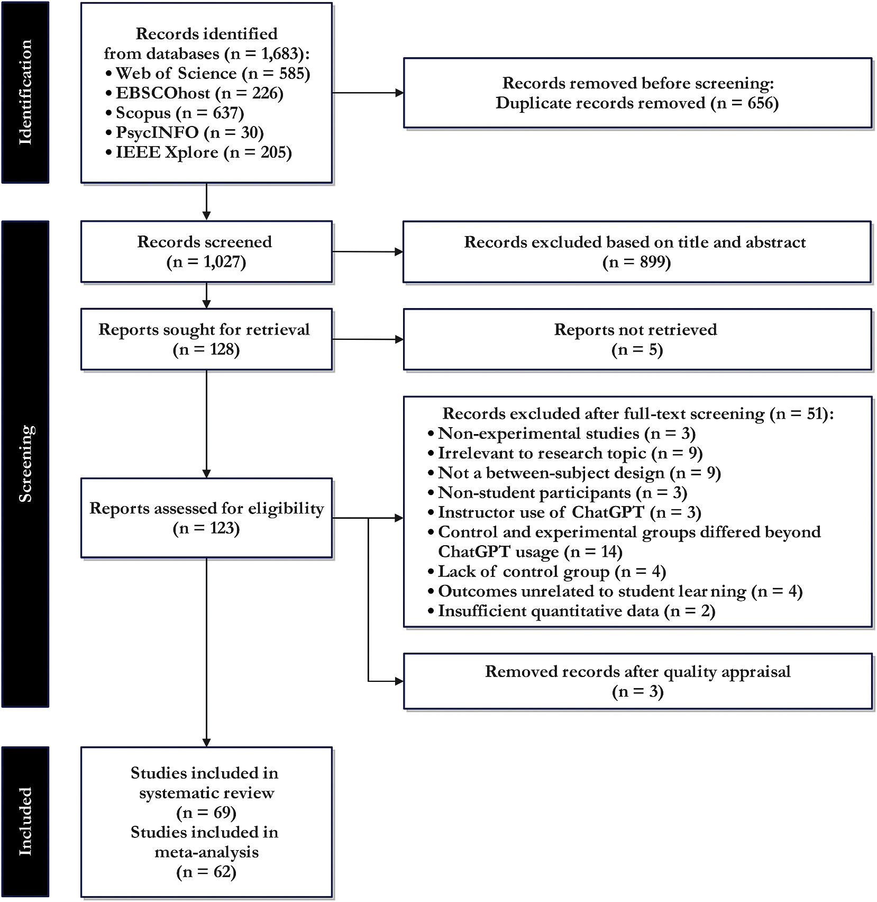
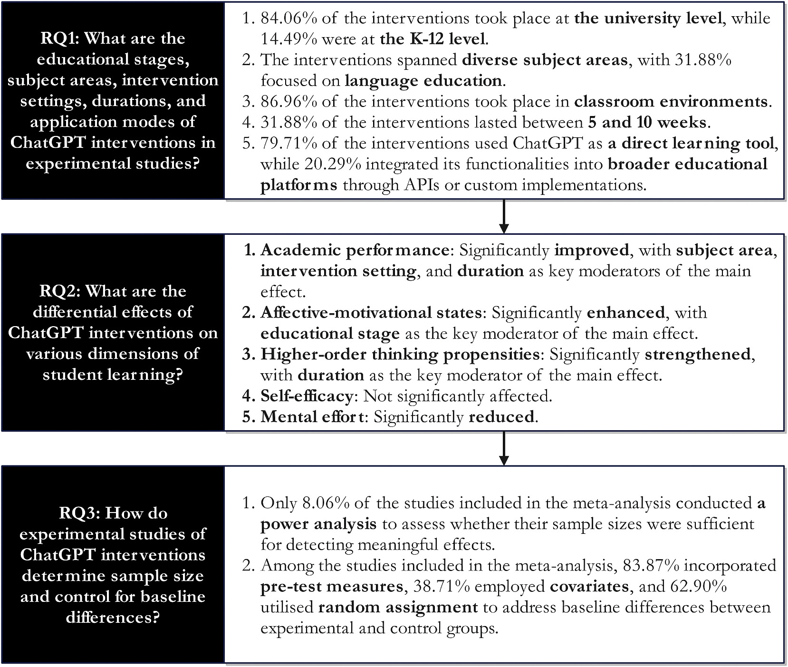
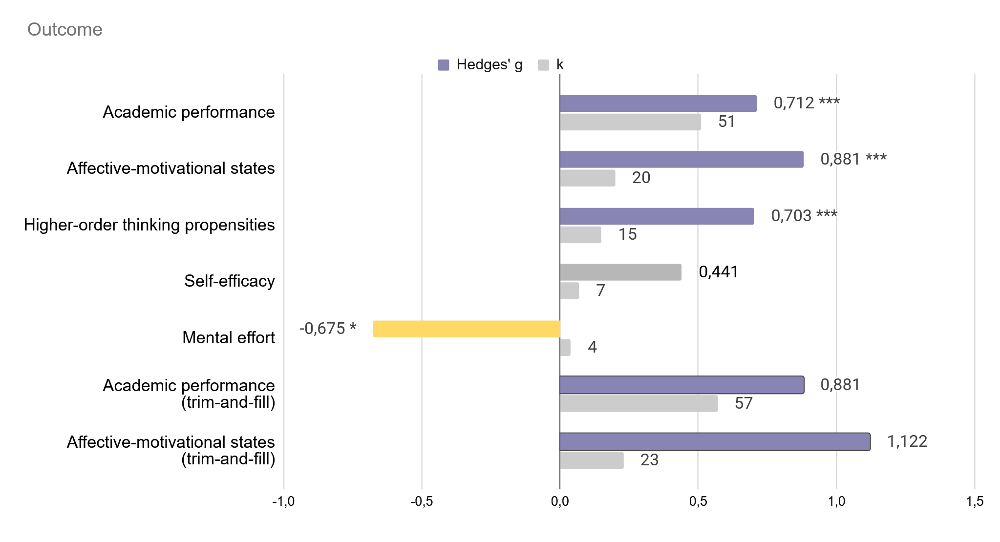
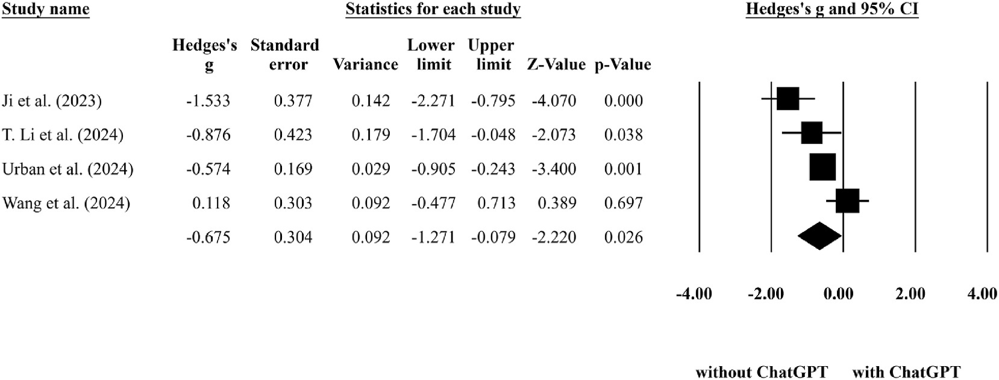
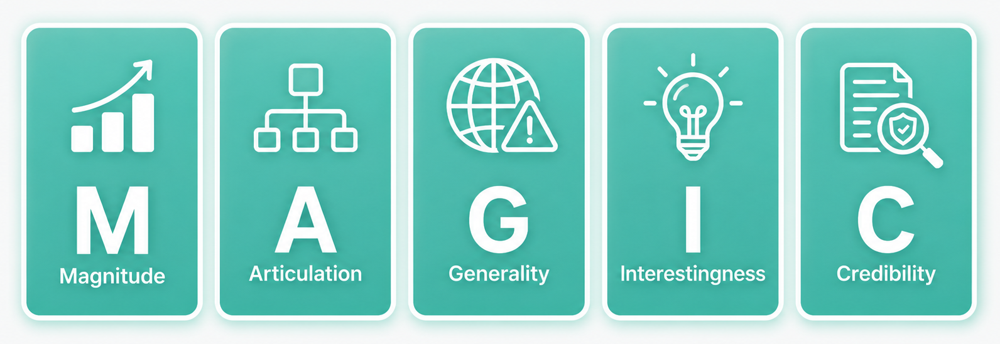
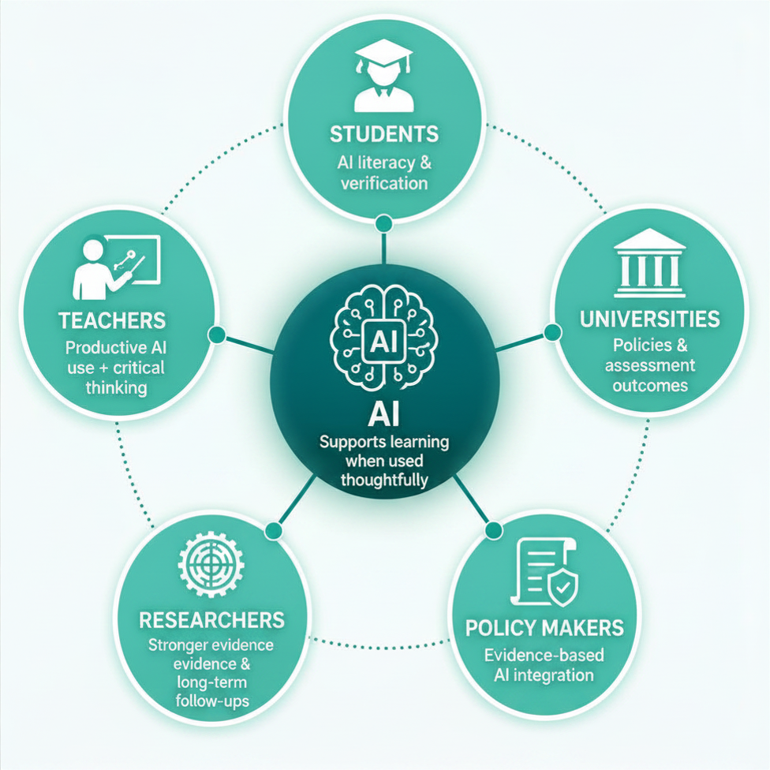

Fig. 1: PRISMA Flow Diagram
Shows how 1,683 initial records were screened down to 69 studies included in the systematic review.
Source: Deng et al. (2025), Fig. 1, Computers & Education, open access under a Creative Commons license.Deng et al. (2025) conducted a systematic review and meta-analysis on the impact of ChatGPT on student learning. The paper focuses on experimental evidence because cross-sectional studies can show correlations, but cannot clearly answer whether ChatGPT causes learning gains.
ChatGPT has quickly become relevant in education because it can generate explanations, feedback, ideas and text.
At the same time, it raises concerns about academic integrity, overreliance, shallow processing and the possible loss
of important skills such as writing, coding and problem solving. The meta-analysis asks what the experimental evidence
actually shows.
However, its role in education is controversial. While some researchers and teachers see ChatGPT as a useful tool for
personalised learning, others are concerned that students may rely on it too much. If learners simply copy AI-generated
answers, they may avoid the effort that is necessary for deep understanding. Therefore, the key question is not only
whether ChatGPT can improve student performance, but also how it should be used to support meaningful learning.
The meta-analysis reviewed on this website helps answer this question by summarising experimental and quasi-experimental
studies. This is important because experimental studies can provide stronger evidence than surveys or opinion-based
research. Instead of only asking students whether they like ChatGPT, the included studies compare learning outcomes
between students who used ChatGPT and students who did not.
The study by Deng et al. examines whether ChatGPT has measurable effects on student learning. The authors focus on several outcome categories, including academic performance, motivation-related outcomes, higher-order thinking, self-efficacy and mental effort.
This broad focus is useful because learning is not only about test scores. A student may perform better on an assignment, but still experience lower engagement, weaker independent thinking or reduced confidence. Similarly, ChatGPT may reduce mental effort, but this can be interpreted in different ways. Lower mental effort may mean that learning becomes easier and more accessible. At the same time, it may also mean that students are no longer engaging deeply enough with the material.
For this reason, the meta-analysis does not provide a simple “ChatGPT is good” or “ChatGPT is bad” answer. Instead, it shows that the effects depend on the learning context, the type of task, the duration of the intervention and the way ChatGPT is integrated into teaching.
The authors searched EBSCOhost, IEEE Xplore, PsycINFO, Scopus and Web of Science for peer-reviewed English-language studies published after ChatGPT's release. They included studies using experimental or quasi-experimental designs with student participants, at least one ChatGPT condition and one control condition. The review followed PRISMA logic and used a PICO-like structure: students as population, ChatGPT intervention, non-ChatGPT control, and learning-related outcomes.
From 1,683 initial records, 69 studies were included in the systematic review. Of these, 62 studies were meta-analysed for the five most frequent outcome categories: academic performance, affective-motivational states, higher-order thinking propensities, self-efficacy and mental effort.
Overall, the meta-analysis reports positive effects of ChatGPT interventions, but the results are not a simple yes-or-no answer. The studies varied strongly in setting, duration, subject area and assessment design.
Moderator analyses showed that subject area, setting and duration mattered for academic performance. For example, classroom interventions showed stronger positive effects than laboratory settings, and very short interventions of less than one week did not show the same benefit for academic performance. The authors therefore argue that the educational context and assessment design are crucial.
These figures make the abstract meta-analysis process more concrete: how the authors selected studies, how they summarised the findings, and how effect sizes and the number of included effects can be inspected visually.

Shows how 1,683 initial records were screened down to 69 studies included in the systematic review.
Source: Deng et al. (2025), Fig. 1, Computers & Education, open access under a Creative Commons license.
Summarises the main pattern: ChatGPT studies are mostly university-level, classroom-based and often use ChatGPT directly.
Source: Deng et al. (2025), Fig. 2, Computers & Education, open access under a Creative Commons license.
A project chart summarising the main outcome effects, including Hedges' g, k and the trim-and-fill adjusted estimates reported for selected outcomes.
Project visual based on Deng et al. (2025), Table 7 and publication-bias adjusted results.
Shows the small set of studies behind the finding that ChatGPT interventions reduced perceived mental effort.
Source: Deng et al. (2025), Appendix B5, Computers & Education, open access under a Creative Commons license.
The review is useful because it follows a transparent search strategy, applies explicit inclusion and exclusion
criteria, uses PRISMA reporting and evaluates study quality with the Standard Quality Assessment Criteria.
However, as discussed in the lecture slides, meta-analyses still follow the GIGO principle, so the strength of the
conclusions depends on the quality and comparability of the included studies.

Image: project visual based on the MAGIC framework used to discuss meta-analysis quality.
Although the meta-analysis provides useful evidence, the results should be interpreted carefully. One major limitation is the very high heterogeneity (e.g. I² above 90% for several outcomes) between studies. This means that the included studies differed strongly from each other in terms of participants, subject areas, learning tasks, intervention duration and assessment methods. As a result, the average effect size gives a useful overview, but it does not mean that ChatGPT will have the same effect in every classroom.
Another limitation concerns publication bias. Studies with positive or significant results are often more likely to be published than studies with small, mixed or negative findings. This can lead to an overly optimistic picture of ChatGPT’s effectiveness. The website already notes that publication bias was a concern, especially for academic performance and affective-motivational outcomes.
A further issue is assessment validity. In some studies, it was unclear whether students were allowed to use ChatGPT during the post-test or final task. This matters because improved performance could reflect better tool use rather than actual learning. For example, if students use ChatGPT while completing an assessment, the result may show that they can produce a better answer with AI support, but not necessarily that they have developed stronger knowledge or skills.
Finally, many studies were short-term. This makes it difficult to know whether ChatGPT leads to lasting learning gains. Future research should therefore include longer interventions and follow-up tests to examine whether students retain knowledge after the AI support is removed.
The main conclusion is that ChatGPT can support learning, but the evidence should be interpreted carefully.
The question is not only whether ChatGPT improves performance, but under which conditions it supports deep learning instead of replacing students' own thinking.

Image: project visual, AI-generated/adapted for educational use.
Here you can find the details to my study example:
ChatGPT-3.5 as writing assistance in students’ essays Bašić et al. (2023) · Study summary →Here you can find the details to my study example:
Impact of ChatGPT on the Academic Writing Quality of Senior High School Students Maghamil and Sieras (2024) · Study summary →Here you can find the details to my study example:
Cognitive ease at a cost: LLMs reduce mental effort but compromise depth in student scientific inquiry. Stadler et al. (2024) · Study summary →Does ChatGPT enhance student learning?
A systematic review and meta-analysis of experimental studies.
This document is provided for academic purposes only. Please cite the original authors when using this material:
Deng, R., Jiang, M., Yu, X., Lu, Y., & Liu, S. (2025). Does ChatGPT enhance student learning? A systematic review and meta-analysis of experimental studies. Computers & Education, 227, 105224. https://doi.org/10.1016/j.compedu.2024.105224
Deng et al. (2025) is published as an open-access article under a Creative Commons license. DOI: 10.1016/j.compedu.2024.105224.